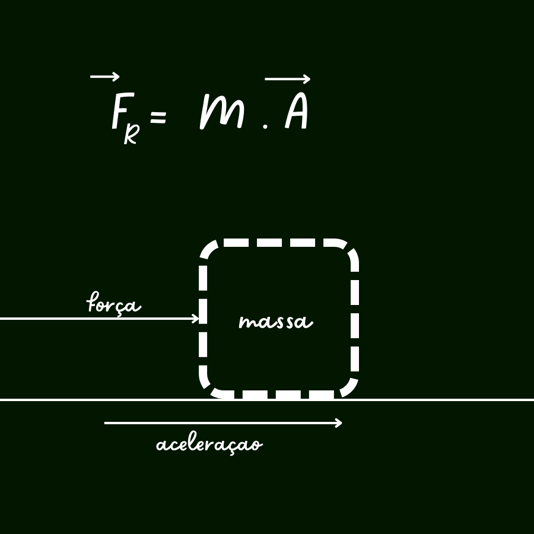

olá
, preparamos para vôce um pequeno resumo sobre a 2° lei de newton junto a algums exerciciosA segunda lei de Newton ou princípio fundamental da dinâmica compõe o conjunto de leis de Newton que fundamentam a Mecânica Clássica. Observe o enunciado dessa lei: A força resultante que age sobre um corpo é igual ao produto da massa do corpo pela sua aceleração.|1| Resumidamente, podemos dizer que se infligirmos a ação de uma força resultante não nula sobre um objeto, este manifestará uma aceleração de mesma direção e sentido dessa força. Assim, a força resultante é proporcional tanto à massa quanto à aceleração, mas inversamente proporcional à inércia (capacidade de resistência ao movimento) do corpo. "O que diz a segunda lei de Newton? A segunda lei de Newton ou princípio fundamental da dinâmica compõe o conjunto de leis de Newton que fundamentam a Mecânica Clássica. Observe o enunciado dessa lei: A força resultante que age sobre um corpo é igual ao produto da massa do corpo pela sua aceleração.|1| Resumidamente, podemos dizer que se infligirmos a ação de uma força resultante não nula sobre um objeto, este manifestará uma aceleração de mesma direção e sentido dessa força. Assim, a força resultante é proporcional tanto à massa quanto à aceleração, mas inversamente proporcional à inércia (capacidade de resistência ao movimento) do corpo.
"Vale ressaltar que caso as forças resultantes gerem um valor nulo, isso significa que o corpo está em equilíbrio, portanto não se moverá. Além disso, como a força resultante é uma grandeza vetorial, a orientação e o módulo devem ser considerados. Direção e sentido: depende da orientação das outras forças atuantes no corpo. Módulo: calculado pela fórmula da segunda lei de Newton. "Vale ressaltar que caso as forças resultantes gerem um valor nulo, isso significa que o corpo está em equilíbrio, portanto não se moverá. Além disso, como a força resultante é uma grandeza vetorial, a orientação e o módulo devem ser considerados.